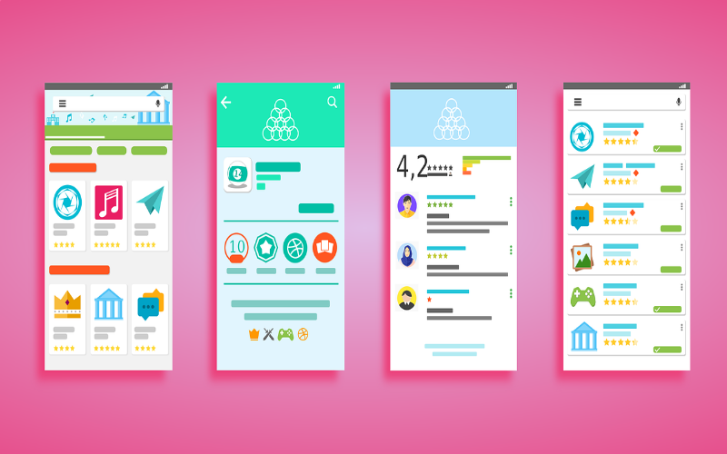

La interfaz de usuario
La interfaz de usuario (UI) se refiere a todos los sistemas con los que un ser humano utiliza una computadora, desde el teclado hasta el mouse, desde el monitor hasta la pantalla táctil; es un medio por medio del cual se interactúa con la computadora, por ejemplo, para mover un archivo de un directorio a otro o iniciar un programa. Para responder en sencillas palabras lo que es interfaz del usuario, podemos definirla como el espacio en donde se puede interactuar entre los seres humanos y las máquinas, con el fin de permitir el funcionamiento y control de la misma, por parte de una persona. Lo ideal es que las interfaces de usuario sean fáciles de usar para que la interacción sea lo más instintiva e intuitiva posible. En el caso de los programas informáticos, esto se denomina interfaz gráfica de usuario.
Referencia
Pingüino Digital. (2020). Interfaz de usuario: ¿Qué es, utilidad, y para qué sirve? Recuperado de https://pinguinodigital.com/blog/interfaz-de-usuario/RYTE WIKI. (2020). Interfaz de Usuario. Recuperado de https://es.ryte.com/wiki/Interfaz_de_Usuario

Interacción Humano Ordenador
En términos generales, es la disciplina que estudia el intercambio de información mediante software entre las personas y las computadoras. Esta disciplina se encarga del diseño, evaluación e implementación de los aparatos tecnológicos interactivos, estudiando el mayor número de casos que les pueda llegar a afectar. El objetivo es que el intercambio sea más eficiente: minimizar errores, incrementar la satisfacción, disminuir la frustración y, en definitiva, hacer más productivas las tareas que rodean a las personas y los computadores. Los humanos interactuamos con los ordenadores de muchas maneras; la interfaz entre humanos y ordenadores es crucial para facilitar esta interacción. Las aplicaciones, los buscadores de internet y los ordenadores portátiles hacen uso de las prevalentes interfaces gráficas de usuario actuales. Las interfaces mediante voz del usuario se utilizan para el reconocimiento de voz y sintetizan sistemas. Todo esto permite a los humanos comprometerse con caracteres personificados de una forma que nos podría ser conseguida con otros paradigmas de interfaz. El crecimiento del campo de la interacción persona-computadora se ha traducido en mayor calidad de interacción.